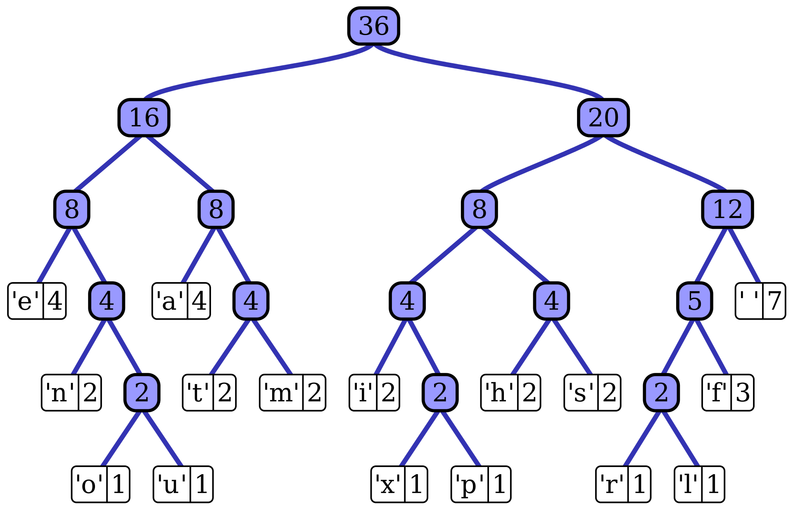

About me
I'm Diego Palmerin Garcia. I'm 20 years old and I've always been astonished by technology specifically computers. The spark that made me study a career in this regard was when I was writing my first lines of code in C. It was something completely different and new for me. Since then, I have steadily tried to learn in my spare time new technologies and do some meaningful projects to help me understand how things work.
Education
Bachelor's degree in computational systems engineering.
Expected graduation: 2024
Escuela Superior de Cómputo - Instituto Politécnico Nacional.
Relevant courses: Operating Systems, Data Structures, Statics, Calculus.
Technical career in Computation.
2017 ~ 2020
CECyT #3 - Instituto Politécnico Nacional.
Relevant courses: Introduction to computer networking, Data bases.
Awards
- Participated in Grand Prix of Mexico with team DBD crew in place 19 of 270.
- 11th place out of 30+ participants in the 2022 Annual programming contest "Donald Knuth" at ESCOM.
- Acknowledgment for having an outstanding GPA of the generation (2017-2020).
Extracurricular
- Member of algorithms club(Student club, also known as "Club de Algoritmia") of ESCOM.
- Google IT Support certification: Online training program that provides the skills for an introductory-level job in IT support (in progress).
- Mongo DB basics certification: Learned hot to set up databases and different ways to search, create, and analyze data with MongoDB.
- React tutorial and projects course by John Smilga in Udemy (in progress).
- NodeJS - The Complete Guide (MVC, REST APIs, GraphQL, Deno) by Maximilian Schwarzmüller in Udemy (in progress).
Languages or Technologies
| C | Proficient(Used for personal projects) |
| C++ | Proficient(Used mostly for competitive programming) |
| HTML | Proficient |
| CSS | Familiar |
| Python | Familiar(Used for games) |
| SQL | Familiar |
| JavaScript | Familiar |
Projects
